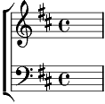

1. Une libellule s'est posée sur la lune;
Dans les bois, au profond des nids,
Les oiseaux se sont endormis.
Refrain:
N'aie pas peur du vent qui gronde,
Ni des chiens errant dans l'ombre!
Mille étoiles vont briller,
Mille étoiles pour te bercer!
2. Tous les coquillages qui jouaient sur la plage
Sont partis se cacher dans l'eau
Retrouver leur petit berceau.
Refrain
3. Tourne la grande ourse, tourne la petite ourse,
Il n'est pas de nuit sans matin,
Le soleil reviendra demain.
Refrain